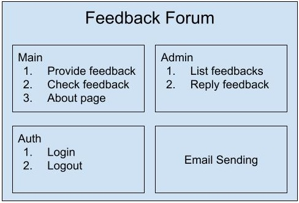
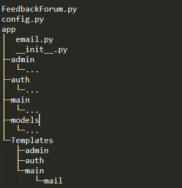
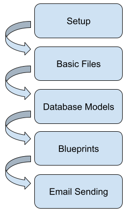

This is a project demonstrating the functionalities of Python Flask framework[1]. Flask is known as a simple but extensible framework[2]. We provide a tutorial of building a feedback forum with Python Flask framework. Feedback Forum allows the client sending feedback to the web app, and allows the administrator giving response to the feedbacks sent in. We implement Feedback Forum with following structured design.
Feedback Forum is composed of four main functionalities as the following picture.
Flask is a flexible framework. It can provide a less structured design or structured with modules. In this project, we implement the modular solution, Flask blueprint. Flask blueprint allows designing functions separately as modules and combining modules into a whole web app according to the needs. It is a built-in functionality of Flask.
Flask is also a extensible framework. It provides a series of extensions for functionalities popular with web apps. In this project, we use Flask-SQLAlchemy for database operation, use Flask-Bootstrap for formatting, use Flask-Login for authentication, use Flask-Mail for sending email, use Flask-WTF for building HTML form. Using these extensions, we are able to build the Feedback Forum.
We create a folder structure as the following picture.
Please complete the tutorial along the following steps.
